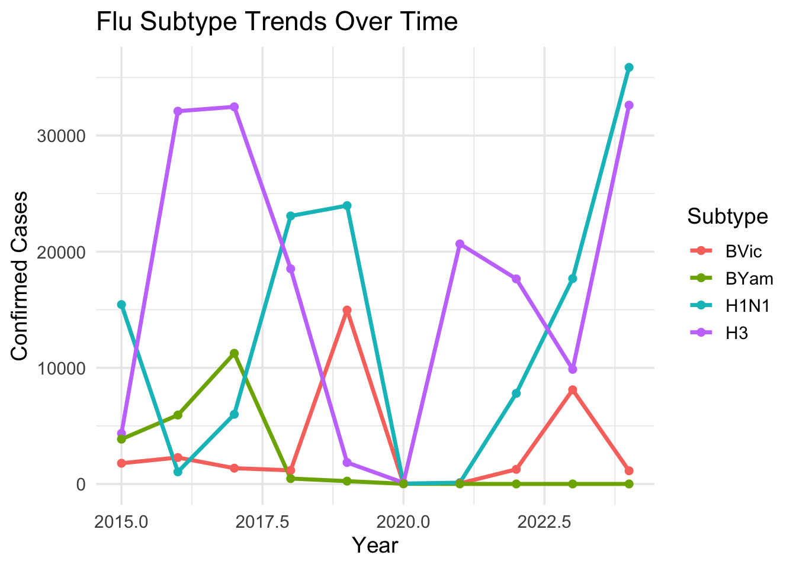
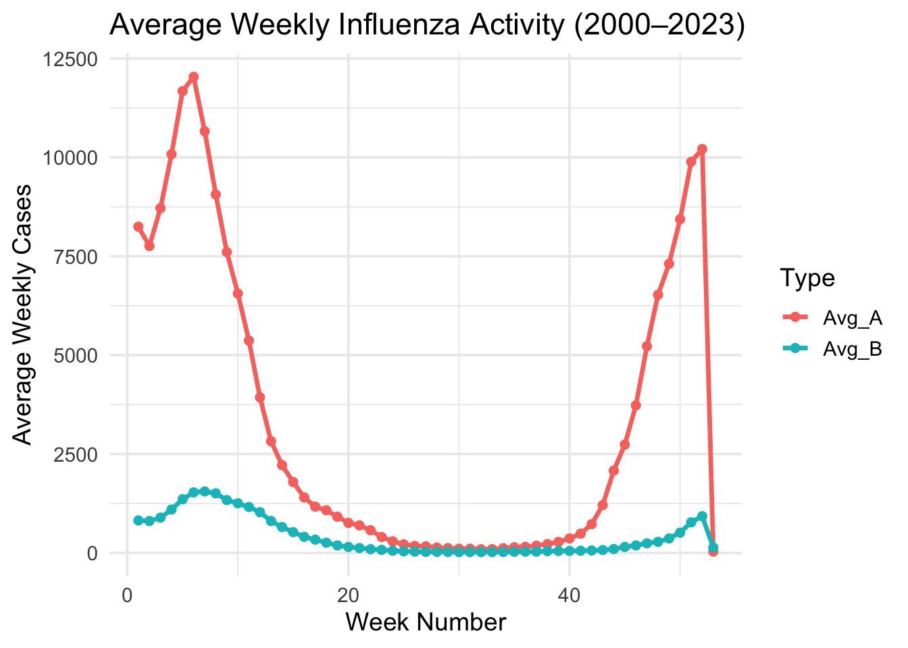
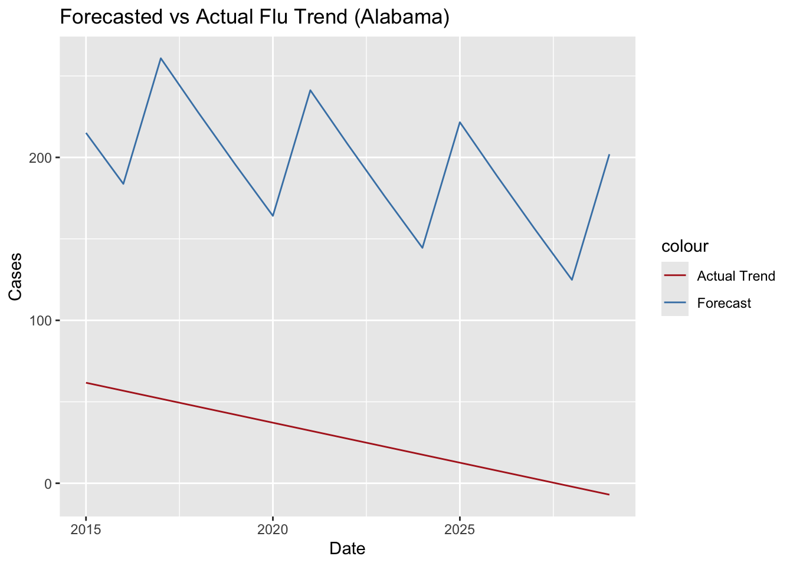

This chart displays the yearly total confirmed cases of Influenza A and B in the United States.
## Warning in RColorBrewer::brewer.pal(N, "Set2"): minimal value for n is 3, returning requested palette with 3 different levels
## Warning in RColorBrewer::brewer.pal(N, "Set2"): minimal value for n is 3, returning requested palette with 3 different levelsWhat you’re seeing:
A comparison of Influenza A and B trends over time. Influenza A
typically dominates most seasons, but spikes in B (such as in 2012 and
2018) provide insight into unusual activity.
What you’re seeing:
Weighted ILI reflects flu-like symptoms as reported by patients and
providers. It often signals the early rise of flu season before
lab-confirmed case surges.
## # A tibble: 5 × 4
## Year Total_A Total_B Total
## <int> <dbl> <int> <dbl>
## 1 2022 424433 3827 428260
## 2 2025 350577 29567 380144
## 3 2024 217319 88821 306140
## 4 2018 147794 72590 220384
## 5 2019 166191 48951 215142What you’re seeing:
A table ranking the five flu seasons with the highest number of
confirmed cases. Use this for historical comparison and identifying
outlier seasons like the 2009 H1N1 pandemic.
What you’re seeing:
A scatterplot assessing the relationship between average ILI percentages
and total confirmed flu cases by year. Not every ILI spike translates to
a high confirmed flu season—but patterns emerge.
## Warning: Using `size` aesthetic for lines was deprecated in ggplot2 3.4.0.
## ℹ Please use `linewidth` instead.
## This warning is displayed once every 8 hours.
## Call `lifecycle::last_lifecycle_warnings()` to see where this warning was
## generated.
What you’re seeing:
Trends in confirmed cases by flu subtype: H1N1, H3, and both B lineages
(Victoria and Yamagata). The visualization captures subtype seasonality
and alternating dominance.

What you’re seeing:
The average week-by-week case load across all flu seasons from
2000–2023. Flu activity peaks consistently between January and March,
confirming classic winter seasonality.

What you’re seeing:
Prophet model predictions for Alabama flu cases compared to the actual
trend. Good alignment indicates potential for forecasting tools in
public health planning.